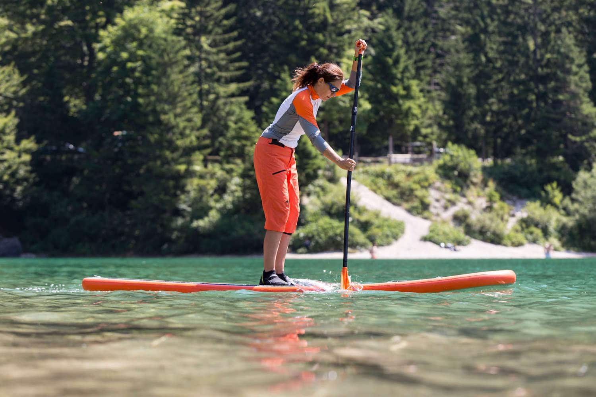
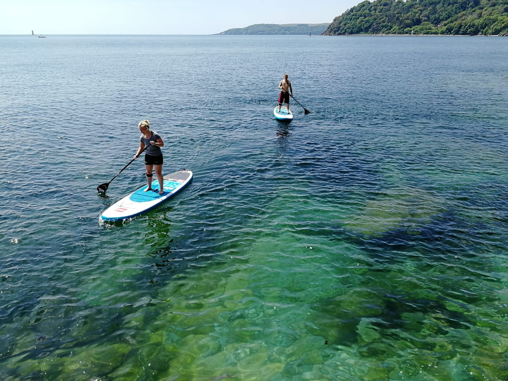

Paddleboarding is a water sport in which participants are propelled by a swimming motion using their arms while
lying or
kneeling on a paddleboard or surfboard in the ocean or other body of water. This article refers to traditional
prone or
kneeling paddleboarding. A derivative of paddleboarding is stand up paddleboarding also called stand up paddle
surfing.
Paddleboarding is usually performed in the open ocean, with the participant paddling and surfing unbroken swells
to
cross between islands or journey from one coastal area to another.

History
Thomas Edward Blake is credited as the pioneer in paddleboard construction in the early 1930s.[1]
While restoring historic Hawaiian boards in 1926 for the Bernice P. Bishop Museum, Blake built a replica of the
previously ignored olo surfboard ridden by ancient Hawaiian aliʻi (kings). He lightened his redwood replica (olo
were
traditionally made from wiliwili wood) by drilling it full of holes, which he then covered, thus creating the
first
hollow board, which led to creation of the modern paddleboard. Two years later, using this same 16 ft (4.9 m),
120 lb
(54 kg) board, Blake won the Pacific Coast Surfriding Championship, first Mainland event integrating both
surfing and
paddling. Blake then returned to Hawaii to break virtually every established paddling record available, setting
1⁄2 mi
(800 m) and 100 yd (91 m) records that stood until 1955.
In 1932, using his drastically modified chambered hollow board, now weighing roughly 60 lb (27 kg), which over
the next
decade he would tirelessly promote as a lifeguarding rescue tool, Blake out-paddled top California watermen Pete
Peterson and Wally Burton in the first Mainland to Catalina crossing race—29 mi (47 km) in 5 hours, 53 minutes.
During
the 1930s, Blake-influenced hollow boards (called “cigar boards” by reporters and later “kook boxes” by surfers)
would
be used in roughly equal proportion to solid plank boards for both paddling and surfing until the new Hot Curl
boards
led wave-riding in a new direction. For paddleboarding, however, the basic principles of Blake's 1926 design
remain
relevant even today.
Renaissance
Paddleboarding experienced a renaissance in the early 1980s after Los Angeles County lifeguard Rabbi Norm
Shifren's
“Waterman Race”—22 mi (35 km) from Point Dume to Malibu—inspired surf journalist Craig Lockwood to begin
production on a
high-quality stock paddleboard—known as the "Waterman." Its design, which has arguably won more races than any
other
stock paddleboard, remains a popular choice today.
Shortly after, L.A, surfboard shaper Joe Bark and San Diego shaper Mike Eaton began production, and soon with
Brian
Szymanski's North County Paddleboards (NCP) became three of the largest U.S. paddleboard makers, eventually
producing
nearly half of the estimated 3–400 paddleboards made each year in the U.S. today.
L.A. lifeguards Gibby Gibson and Buddy Bohn revived the Catalina Classic event in 1982 for a field of 10
competitors.
Concurrently in Hawaii, the annual Independence Day Paddleboard Race from Sunset to Waimea was drawing a few
hundred
competitors, many using surfboards due to lack of proper paddleboards on the Islands. As paddlers began ordering
boards
from the Mainland, local surfboard shapers like Dennis Pang (now one of Hawaii's largest paddleboard makers)
moved
quickly to fill the local niche. On both fronts, paddleboarding has been consistently gaining momentum and
popularity.
In 1996 the sport of paddleboarding was making a comeback. Once the domain of only dedicated watermen and big
wave
riders in the 1950s and 60s, the sport found a new set of acolytes on the North Shore of Oahu and in Honolulu at
the
Outrigger Canoe Club. At that time Hawaii's top paddler was Dawson Jones. After completing the 32 mi (51 km)
Catalina
Classic, from Catalina Island to Manhattan Beach, Jones returned to Hawaii inspired to establish a race across
the
Ka’iwi Channel. In 1997, the race that is now known as the Paddleboard World Championships was born. Today the
race
sells out
